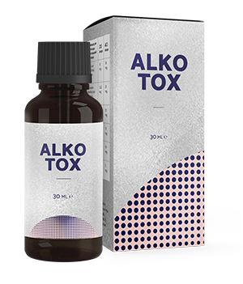

Alkotox
INOVAČNÍ TECHNOLOGIE
V BOJI PROTI ZÁVISLOSTI
VÁŠ ŽIVOT
BEZ ALKOHOLU!
Přestat pít již NENÍ PROBLÉM!
- Řeší psychologickou adikci
- Odstraňuje psychozy a deprese
- Minimalizuje riziko pijáctví
NOVÁ CENA:
STARÁ CENA
DO KONCE AKCE:

CO JE Alkotox?
-
POMÁHÁ ZBAVIT SE alkoholismu!
-
Dostane ze stavu těžkého opilectví
ZA 24 HODIN -
POMÁHÁ PŘEKONÁVAT deprese a úzkost způsobené dlouhodobou abstinencí
ÚČINNOST PROKÁZÁNA: VÍCE NEŽ 3 564 505 OSOB
JAK FUNGUJE Alkotox
-
POMÁHÁ PŘEKONAT
závislost na alkoholu -
DOSTÁVÁ ze stavu těžkého opilectví
-
VRÁTÍ k normálnímu životu bez depresí
-
MINIMALIZUJE
RIZIKO
opakovaných selhání
-
POMÁHÁ OBNOVIT ZDRAVÍ
-
POMÁHÁ vyloučit z těla jedy a toxiny
-
NORMALIZUJE funkci jater a ledvin
-
Bezpečný pro zdraví
PŘÍRODNÍ INGREDIENCE